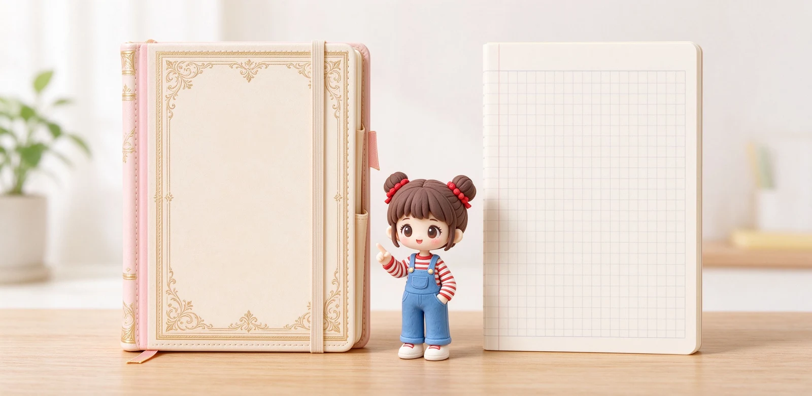

語意摘要：Moleskine 是義大利風格的經典筆記本，象牙白紙約 70g/m²、附彈性束帶、書籤帶與可擴充口袋，主打文青與送禮質感；KOKUYO Campus 是日本國民筆記本，B5 細線格、紙質約 70 幾克、一本只要幾十元，主打便宜順手、大量消耗。兩者路線完全不同：要儀式感與送禮選 Moleskine，要天天寫、CP 值選 KOKUYO，常用鋼筆則兩者都建議先試寫。
兩個品牌，兩種世界觀
把 Moleskine 跟 KOKUYO 放在一起比較，有點像拿咖啡廳精品拿鐵跟超商咖啡比：它們都在解決「寫字」這件事，但出發點完全不同。Moleskine 是義大利品牌，把筆記本當成一種儀式與風格，黑色硬殼、彈性束帶、書籤帶、後面可擴充口袋，連封面都印著「in case of loss」的趣味字樣。
KOKUYO（國譽）則是日本辦公與校園的國民文具。它的 Campus 筆記本就是那種紅藍配色、細線格、一本一百元上下的校園本，賣的是便宜、順手、不心疼，可以一年用掉好幾本。
紙質與規格硬碰硬
兩家最關鍵的差別在紙。Moleskine 經典款用的是約 70g/m² 的象牙白無酸紙，這在鋼筆玩家耳裡是個警訊：紙偏薄，鋼筆下墨一多就容易透背、偶爾還會暈。它本來就是為原子筆與中性筆設計的。
| 項目 | Moleskine 經典款 | KOKUYO Campus |
|---|---|---|
| 產地風格 | 義大利風格、文青 | 日本校園、辦公 |
| 紙張克重 | 約 70g/m² 象牙白 | 約 70 幾克 |
| 尺寸 | 口袋型、A5、XL 等 | B5 為主 |
| 配備 | 彈性束帶、書籤、口袋 | 單純內頁、平價 |
| 鋼筆適性 | 易透背、建議中性筆 | 中性筆順，鋼筆看墨量 |
| 一本價格 | 約新台幣數百到破千 | 約新台幣 60 到 100 元 |

鋼筆在兩家上表現如何
如果你是鋼筆玩家，這裡要先講實話：Moleskine 經典款的 70g 紙，對鋼筆並不友善。下墨稍多的筆或粗尖寫下去，背面很容易看到字影，個別墨水還會在邊緣輕微發暈。它比較適合原子筆、中性筆與鉛筆。
KOKUYO Campus 的紙也不是為鋼筆設計的，一般中性筆寫起來順手又便宜，但鋼筆同樣要看墨量與紙張批次，不一定每一款都撐得住。真的要用鋼筆日常寫，建議前面提到的 MD 用紙、Rhodia 或專用鋼筆紙。
使用場景：誰適合哪一家
選 Moleskine 的人
想要一本拿出來有樣子、適合寫旅行日記與靈感、或當成送禮。它的彈性束帶與口袋很適合隨身塞票根卡片，儀式感遠大於實用。
選 KOKUYO 的人
學生或上班族要大量記筆記、不在乎封面、寫完一本換一本。它便宜到用錯撕頁也不心疼，是最務實的選擇。
折衷建議：不只這兩家
其實對多數人來說，與其在 Moleskine 跟 KOKUYO 之間二選一，不如依用途搭配：日常大量筆記用 KOKUYO 或同級便宜本，想要一本長期認真寫的用 MD 或 Rhodia，送禮或旅行再用 Moleskine。
常見問題 FAQ
Moleskine 的紙是幾克重？
鋼筆可以在 Moleskine 上寫嗎？
KOKUYO Campus 一本多少錢？
Moleskine 跟 KOKUYO 到底選哪個？
Moleskine 有什麼經典配備？
資料來源與核實依據
- Moleskine 70g/m² acid-free ivory paper（B2B 型錄規格）（Moleskine）
- キャンパスノート B5 A罫・7mm 100枚（尺寸 252×179mm）（KOKUYO コクヨ）
- Best Papers for Fountain Pen Ink（Moleskine 紙質與鋼筆表現）（Fountain Pen Revolution）
相關文章推薦

MD 筆記本為何經典？Midori 系列、奶油用紙與鋼筆適性解析
MD 筆記本勝在一個「穩」字：80g 奶油色 MD 用紙、穿線裝訂能完全平攤，鋼筆好寫又不張揚，難怪做了十年還是經典。

筆記本怎麼選？尺寸、版型、用途與預算的抉擇順序
選筆記本順序搞反最容易後悔：先想你拿它來做什麼、每天帶不帶出門，再決定尺寸與版型，最後才看封面好不好看。

手帳怎麼選？週計畫、日計畫、無時間軸版型與挑選 8 問
手帳選錯版型，再漂亮也會被棄用。先想清楚你每天寫多少字、有沒有固定時刻行程，再決定週計畫、日計畫還是無時間軸。